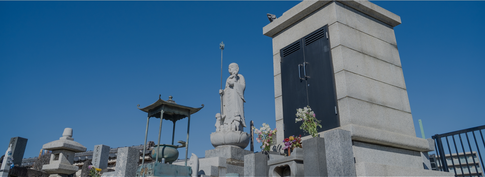

合祀墓
合祀墓 永代供養墓（お墓の継承者がいない方）
-
1
合祀墓
屋外にある共同墓で観音様を祀っている大きなお墓の下で複数のお遺骨をまとめて埋葬するお墓のことです。血縁関係のない人たちのお遺骨が粉骨後一緒に埋葬され、永代に渡りお寺にてご供養させていただきます。
- 合祀墓本体に一時お預かりをして本体が上限に達した際に粉骨をし本体下の納骨室に埋葬させていただきます。
- 年間管理料不要。
- 埋葬される方は契約者から見て二親等以上の親族に限ります。（一年間合同墓をご利用いただいた方はご利用可能）
- 葬儀社あるいは後継人等の契約もご相談承ります。
- こちらの永代供養墓は南多摩霊園のお墓をご利用の方もご使用いただけます。
- 合祀墓利用料
-
30,000円（非課税、管理費含む）
- 粉骨手数料
-
10,000円（非課税）
※お遺骨を粉砕し埋蔵します。 - 合計
-
40,000円（非課税）
- ※献花はご用意下さい。
- ※法要も医王寺にて承ることが可能。
-
2
合同墓（屋外納骨堂）
屋外にある共同墓でお骨のまま預かります。期限付きの納骨堂で期限を消化した後、自動的に無料で合祀墓に移動いたします。期限内であれば改葬等で他の納骨施設に移動も可能です。
- 13年プランと単年プランがございます。
- 年間管理料不要。
- 御埋葬時にはご法要が必要となります。合祀の法要についてはご相談ください。
- 13年プラン
-
170,000円（非課税、管理費含む）
- 単年プラン
-
30,000円 / 年（非課税、管理費含む）
-
3
樹木葬
樹木葬とは許可を得た区画（墓所）にお遺骨を埋葬し、墓石などを設けずに樹木（花木）を墓碑として自然と共生する魅力ある新しいお墓のかたちです。
- お遺骨を粉骨し、紙のパイルに入れて御埋葬いたします。
- 樹木葬に咲いてあるお花は春と秋にそれぞれ入れ替えるため四季を感じれます。
- 注意点としてはご遺骨をお戻しすることはできません。
- 樹木葬利用料
-
300,000円（非課税、管理費含む）
- 粉骨手数料
-
10,000円（非課税）
※お遺骨を粉砕し埋蔵します。 - 埋葬料
-
33,000円（非課税）
- 合計
-
343,000円（非課税、管理費含む）
※上記に追加で法要代のご料金がかかります。